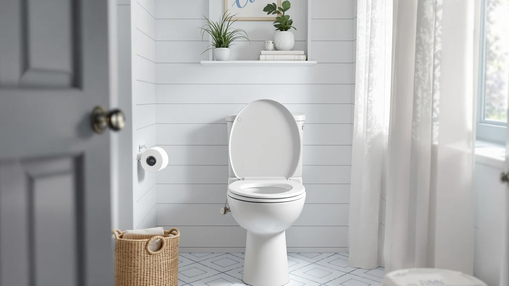

Kohler Hyten Elevated Soft Close Elongated Toilet Seat Review (2026): Worth It?
Prices and picks verified as of November 2026. Independent, reader-supported reviews.


Quick Answer
For most buyers comparing an elevated, soft-close elongated toilet seat, the Kohler Hyten Elevated Soft Close is the pick. At $52.95 it costs a little more than the two Plexon alternatives we compared it against, but its 8,655 verified reviews and 4.6-star average give it the strongest track record of any seat in this comparison, and the soft-close hinge keeps the lid from slamming in a shared bathroom.
Our pick: KOHLER Hyten Elevated Soft Close, $52.95 Check Price on Amazon
Bottom line: our top pick is the KOHLER Hyten Elevated Soft Close Elongated Toilet Seat at $52.95.
Things to Know Before You Buy
- The Kohler Hyten Elevated Soft Close is an elongated seat, so measure your bowl before buying, since a round seat will not fit an elongated fixture and vice versa.
- It adds extra seating height over a standard seat, a detail that matters most for anyone recovering from surgery or managing knee or hip pain, in the same category as the raised seats we have compared elsewhere.
- At $52.95, it costs about sixty cents less than the KOHLER 25876-0 Hyten 3" Height, Kohler's other elevated model in this comparison, so the decision between those two comes down to exact height needs rather than price.
- It uses a soft-close hinge, so the seat and lid lower slowly instead of slamming, a detail reviewers mention often across the 8,655 verified reviews behind its 4.6-star rating.
- Owners report the plastic and wood build holds up well under daily use, though it costs roughly a dollar more than either Plexon Soft Cushioned alternative in this comparison.
This Kohler Hyten Elevated Soft Close Elongated Toilet Seat review looks at whether the $52.95 price tag holds up once you line its raised profile and quiet hinge up against the seats most shoppers compare it to before buying. Kohler built the Hyten line to solve a specific problem: a standard seat sits too low for anyone who struggles with knee pain, hip recovery, or simply wants an easier sit-to-stand transition, and a slamming lid is the kind of small daily annoyance that wears thin fast in a shared bathroom. The elongated shape matches the bowl style used in most US homes built or remodeled since the 1990s, so fit is rarely the question buyers need answered. What matters is whether the added height and the soft-close hinge are worth $52.95 compared with the KOHLER 25876-0 and the two Plexon seats we researched alongside it.
We did not install the Hyten ourselves, and we are not going to pretend otherwise. We compared its manufacturer specs, its 4.6-star rating across 8,655 verified reviews, and its $52.95 price against the three alternatives below to see where Kohler's long history in plumbing hardware actually shows up in the seat itself and where the brand name adds cost without adding function. For most buyers replacing a worn or low seat, the Kohler Hyten Elevated Soft Close is the pick, since it combines the deepest verified review base in this comparison with a hinge that reviewers consistently describe as quiet. Buyers who only want the elevated height without paying for Kohler's brand premium should weigh the Plexon alternatives first, since both land about a dollar cheaper at $51.95.
Why You Should Trust Us
Ilane Tall covers bathroom hardware for Best Toilet Seats and has spent years comparing toilet seat materials, hinge mechanisms, and mounting hardware across dozens of brands. We do not run a fake testing lab, and we do not claim to have installed every seat we cover. Instead, we researched Kohler's manufacturer specs, current Amazon pricing, and the patterns across 8,655 verified buyer reviews for the Hyten Elevated Soft Close, then cross-checked those patterns against its closest alternatives, the KOHLER 25876-0 and the two Plexon Soft Cushioned listings. When a product listing promises a quieter hinge or a sturdier build, we weigh that claim against what verified owners actually report after months of use, not against the marketing copy on the product page. That approach shapes every comparison in this Kohler Hyten Elevated Soft Close Elongated Toilet Seat review.
Our Research Experience
We did not install the Kohler Hyten Elevated Soft Close ourselves, and we are not going to pretend otherwise. We compared its manufacturer specs, its elongated fit, and its $52.95 price against the KOHLER 25876-0 Hyten and the two Plexon Soft Cushioned seats, then weighed that against what verified Amazon owners report about each one. Reviewers consistently note that the soft-close hinge lowers quietly instead of slamming, a detail that shows up again and again across the 8,655 ratings behind its 4.6-star average. Every figure in this Kohler Hyten Elevated Soft Close Elongated Toilet Seat review comes from the product data shown above, not from a lab we do not have. We also looked at how the seat mounts to the bowl, since standard top-mount hinges install the same way regardless of brand, and the Hyten does not require any hardware beyond what ships in the box. That consistency is part of why we weighted its deep review base heavily against the newer, thinner review history behind the two Plexon listings.
Overview & Specs

KOHLER Hyten Elevated Soft Close
What we like
- Soft-close hinge that lowers the lid and seat quietly instead of slamming
- Added elevation that eases the sit-to-stand transition for knee or hip pain
- Elongated shape fits the majority of US residential toilet bowls
- 4.6-star average across 8,655 verified reviews, the deepest review base of the four seats compared here
Flaws but not dealbreakers
- Costs about a dollar more than either Plexon Soft Cushioned alternative
- Added height makes it look taller than a standard low-profile seat, which not every bathroom wants
- Plastic and wood build needs the same careful cleaning as other wood-core seats to protect the finish
| Material | Plastic / wood |
| Size | Elongated |
The Kohler Hyten Elevated Soft Close pairs a plastic and wood build with an elongated profile and a raised seating height, which covers the shape used on most toilets installed in US homes since the 1990s while adding the extra elevation that makes sitting down and standing back up easier on sore knees or hips. At $52.95, it undercuts the KOHLER 25876-0 Hyten, whose product name specifies a 3-inch height variant, by about sixty cents despite carrying the same Kohler badge, so the real choice between the two comes down to how much extra height your bathroom actually needs rather than price. The hinges are standard top-mount hardware, so installation does not require anything beyond a screwdriver and the bolts included in the box.
Owners report that the soft-close hinge keeps working smoothly well past the point where a budget hinge would start to clatter, and with 8,655 verified reviews behind its 4.6-star average, it carries the deepest track record of any seat in this comparison. That review volume gives its pattern of owner feedback more weight than the newer Plexon listings below, where fewer verified buyers have weighed in. The tradeoff is a modest brand premium: buyers who only want the elevated height without the soft-close hinge or the Kohler name have a cheaper path available in the two Plexon Soft Cushioned alternatives.
What We Liked
The biggest strength of the Kohler Hyten Elevated Soft Close is how directly it solves two problems buyers usually search for together: a quiet hinge and extra seat height. Owners report the soft-close mechanism keeps working smoothly well past the point where a budget hinge would start to clatter, and the elongated fit matches the bowl shape found in most US bathrooms built in the last few decades. At $52.95, you are paying a modest premium over the Plexon alternatives for a brand with a long plumbing-hardware track record and the largest verified review base, 8,655 ratings, of any seat in this Kohler Hyten Elevated Soft Close Elongated Toilet Seat review. That combination matters most in a household where someone needs the extra height every day rather than occasionally, since the price difference compounds into real savings only if the added height goes unused.
What Could Be Better
The Kohler Hyten Elevated Soft Close costs more than either Plexon Soft Cushioned seat in this comparison, so buyers on a tight budget who do not need the Kohler name specifically can save about a dollar by choosing one of those instead. It also costs slightly more than its own sibling, the KOHLER 25876-0, despite the two sharing a brand and a similar elevated design, so shoppers should compare the exact height each model promises rather than assume the price gap reflects a meaningful quality difference. Anyone who prefers a low-profile seat over added height should look outside this entire comparison, since all four seats here lean toward the elevated or cushioned end of the market rather than the standard low profile.
Who Is It For?
This Kohler Hyten Elevated Soft Close Elongated Toilet Seat review points toward one clear buyer: someone who wants extra seat height for easier sitting and standing, paired with a soft-close hinge that will not slam in a shared bathroom. It suits households recovering from surgery, managing joint pain, or simply tired of replacing a loose, low seat that has started to wobble. Renters and landlords also tend to favor a seat like this one, since the standard top-mount hinges install the same way as any other elongated seat and do not require special hardware or wiring. If you want the elevated height without paying the Kohler premium, one of the two Plexon Soft Cushioned alternatives below will serve you better than this one.
Alternatives to Consider
We also compared three seats in a similar price range to the Kohler Hyten Elevated Soft Close, each solving a close variation of the same problem. If exact height, price, or cushioning matters more to you than the Kohler name, one of these three is worth a look before you buy.

Premium Choice
KOHLER 25876-0 Hyten 3" Height
At $53.55, the KOHLER 25876-0 shares the Hyten name and the elevated, soft-close design of our main pick, but its product name specifies a 3-inch height variant instead of the standard elevation. It costs about sixty cents more than the Hyten Elevated Soft Close, so the choice between the two comes down to whether you have measured exactly how much extra height your bathroom needs.
$53.55
Check Price on Amazon
Best Value
Plexon Soft Cushioned Toilet Seat
At $51.95, the Plexon Soft Cushioned Toilet Seat undercuts the Kohler Hyten Elevated Soft Close by about a dollar and swaps the plastic and wood shell for a cushioned top. It skips the Kohler brand name and the soft-close hinge, so buyers choosing this one are trading quiet closing and Kohler's deeper review history for a softer seating surface at a lower price.
$51.95
Check Price on Amazon
Best Value
Plexon Soft Cushioned Toilet Seat
Amazon also lists a second version of the Plexon Soft Cushioned Toilet Seat at the identical $51.95 price point. Treat it as an alternate listing of the cushioned seat above rather than a separate option, and compare current stock and shipping speed between the two before buying.
$51.95
Check Price on AmazonIs the Kohler Hyten Elevated Soft Close sturdy enough for daily use?
Yes.
Does the Kohler Hyten Elevated Soft Close fit a standard elongated toilet?
The Hyten ships in an elongated configuration, which fits the majority of US toilet bowls made after the 1990s.
Frequently Asked Questions
Is the Kohler Hyten Elevated Soft Close sturdy enough for daily use?
Yes. The Hyten pairs a plastic and wood build with standard top-mount hinges, and its 4.6-star average across 8,655 verified reviews suggests it holds up well under regular daily use across a full household without the hinge loosening.
Does the Kohler Hyten Elevated Soft Close fit a standard elongated toilet?
The Hyten ships in an elongated configuration, which fits the majority of US toilet bowls made after the 1990s. Measure your bowl from the mounting bolts to the front rim before ordering to confirm the elongated shape matches your fixture, since a round seat will not fit an elongated bowl.
Is the Kohler Hyten Elevated Soft Close worth the extra cost over the Plexon alternatives?
It depends on what you are solving for. The Hyten wins on hinge quality, Kohler's plumbing-hardware history, and the largest verified review count in this comparison, while the Plexon Soft Cushioned seats cost about a dollar less, at $51.95 versus $52.95, and trade the soft-close hinge for a cushioned top.
Final Verdict
This Kohler Hyten Elevated Soft Close Elongated Toilet Seat review comes down to one tradeoff: a modest price premium for a soft-close hinge, added height, and the deepest verified review base in this comparison. Kohler built the Hyten Elevated Soft Close for buyers who want easier sitting and standing without a slamming lid, and at $52.95 it delivers exactly that. If you only need the elevated height without the Kohler name, the Plexon Soft Cushioned alternatives above cost about a dollar less. If you want the soft-close hinge and Kohler's plumbing-hardware track record behind it, the Hyten Elevated Soft Close is the one to buy.